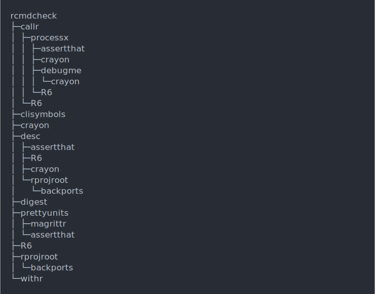

Draw a tree using box drawing characters. Unicode characters are
used if available. (Set the cli.unicode option if auto-detection
fails.)
Usage
tree(
data,
root = data[[1]][[1]],
style = NULL,
width = console_width(),
trim = FALSE
)Arguments
- data
Data frame that contains the tree structure. The first column is an id, and the second column is a list column, that contains the ids of the child nodes. The optional third column may contain the text to print to annotate the node.
- root
The name of the root node.
- style
Optional box style list.
- width
Maximum width of the output. Defaults to the
widthoption, seebase::options().- trim
Whether to avoid traversing the same nodes multiple times. If
TRUEanddatahas atrimmedcolumn, then that is used for printing repeated nodes.
Details
A node might appear multiple times in the tree, or might not appear at all.
data <- data.frame(
stringsAsFactors = FALSE,
package = c("processx", "backports", "assertthat", "Matrix",
"magrittr", "rprojroot", "clisymbols", "prettyunits", "withr",
"desc", "igraph", "R6", "crayon", "debugme", "digest", "irlba",
"rcmdcheck", "callr", "pkgconfig", "lattice"),
dependencies = I(list(
c("assertthat", "crayon", "debugme", "R6"), character(0),
character(0), "lattice", character(0), "backports", character(0),
c("magrittr", "assertthat"), character(0),
c("assertthat", "R6", "crayon", "rprojroot"),
c("irlba", "magrittr", "Matrix", "pkgconfig"), character(0),
character(0), "crayon", character(0), "Matrix",
c("callr", "clisymbols", "crayon", "desc", "digest", "prettyunits",
"R6", "rprojroot", "withr"),
c("processx", "R6"), character(0), character(0)
))
)
tree(data)
tree(data, root = "rcmdcheck")
Colored nodes
data$label <- paste(data$package,
style_dim(paste0("(", c("2.0.0.1", "1.1.1", "0.2.0", "1.2-11",
"1.5", "1.2", "1.2.0", "1.0.2", "2.0.0", "1.1.1.9000", "1.1.2",
"2.2.2", "1.3.4", "1.0.2", "0.6.12", "2.2.1", "1.2.1.9002",
"1.0.0.9000", "2.0.1", "0.20-35"), ")"))
)
roots <- ! data$package %in% unlist(data$dependencies)
data$label[roots] <- col_cyan(style_italic(data$label[roots]))
tree(data, root = "rcmdcheck")
Trimming
pkgdeps <- list(
"dplyr@0.8.3" = c("assertthat@0.2.1", "glue@1.3.1", "magrittr@1.5",
"R6@2.4.0", "Rcpp@1.0.2", "rlang@0.4.0", "tibble@2.1.3",
"tidyselect@0.2.5"),
"assertthat@0.2.1" = character(),
"glue@1.3.1" = character(),
"magrittr@1.5" = character(),
"pkgconfig@2.0.3" = character(),
"R6@2.4.0" = character(),
"Rcpp@1.0.2" = character(),
"rlang@0.4.0" = character(),
"tibble@2.1.3" = c("cli@1.1.0", "crayon@1.3.4", "fansi@0.4.0",
"pillar@1.4.2", "pkgconfig@2.0.3", "rlang@0.4.0"),
"cli@1.1.0" = c("assertthat@0.2.1", "crayon@1.3.4"),
"crayon@1.3.4" = character(),
"fansi@0.4.0" = character(),
"pillar@1.4.2" = c("cli@1.1.0", "crayon@1.3.4", "fansi@0.4.0",
"rlang@0.4.0", "utf8@1.1.4", "vctrs@0.2.0"),
"utf8@1.1.4" = character(),
"vctrs@0.2.0" = c("backports@1.1.5", "ellipsis@0.3.0",
"digest@0.6.21", "glue@1.3.1", "rlang@0.4.0", "zeallot@0.1.0"),
"backports@1.1.5" = character(),
"ellipsis@0.3.0" = c("rlang@0.4.0"),
"digest@0.6.21" = character(),
"glue@1.3.1" = character(),
"zeallot@0.1.0" = character(),
"tidyselect@0.2.5" = c("glue@1.3.1", "purrr@1.3.1", "rlang@0.4.0",
"Rcpp@1.0.2"),
"purrr@0.3.3" = c("magrittr@1.5", "rlang@0.4.0")
)
pkgs <- data.frame(
stringsAsFactors = FALSE,
name = names(pkgdeps),
deps = I(unname(pkgdeps))
)
tree(pkgs, trim = TRUE)
# Mark the trimmed nodes
pkgs$label <- pkgs$name
pkgs$trimmed <- paste(pkgs$name, " (trimmed)")
tree(pkgs, trim = TRUE)